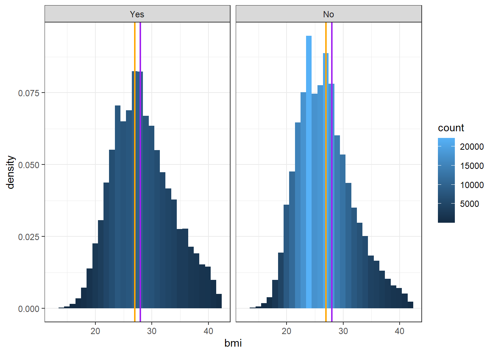
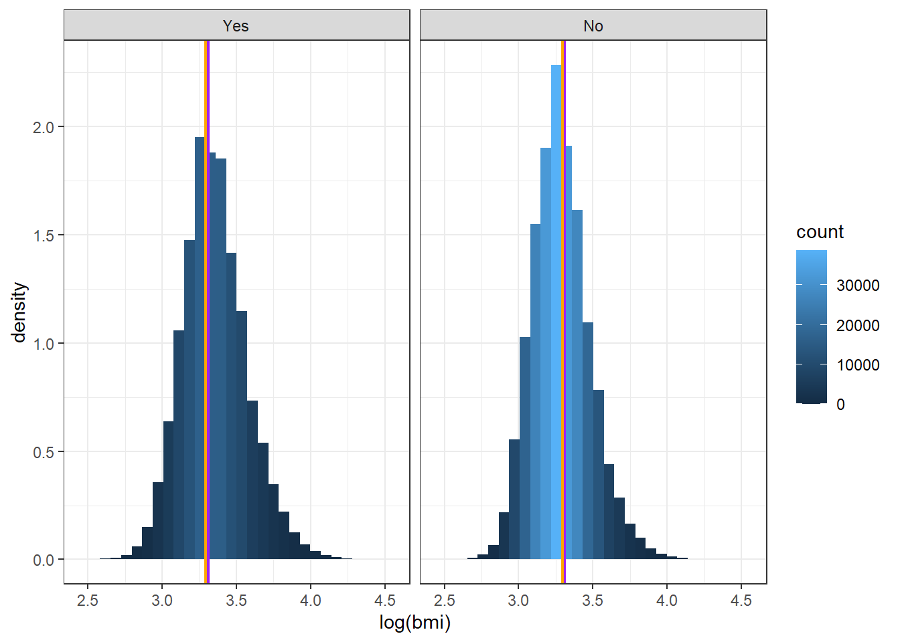
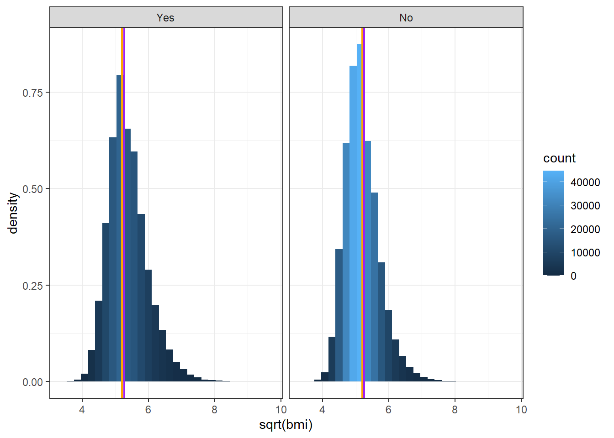
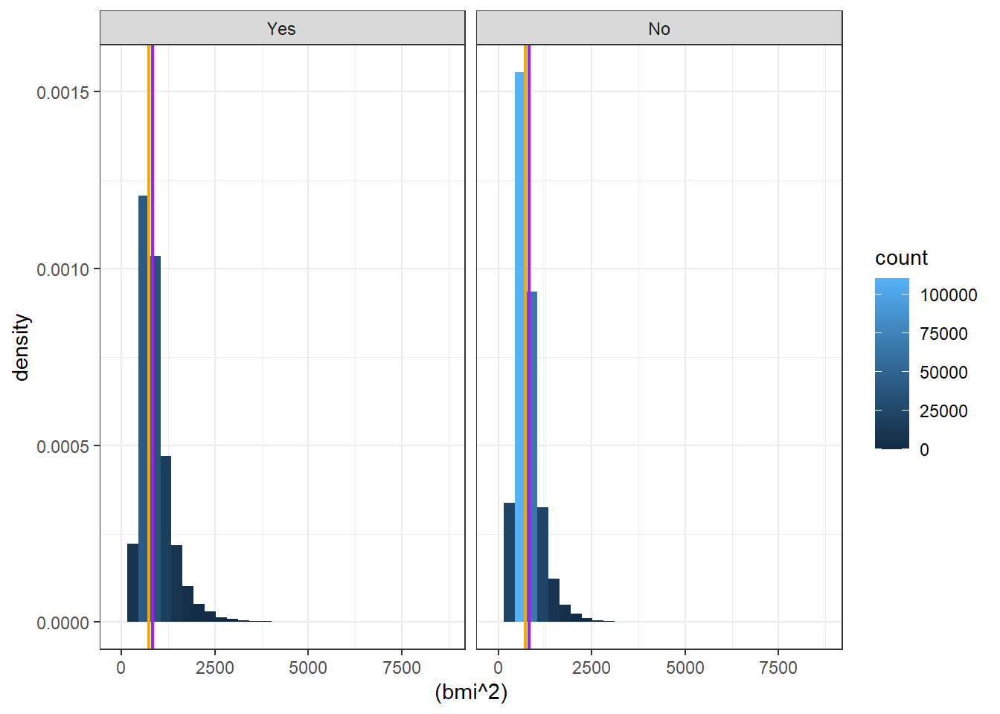

In this project we will be using a subset of the data from the Behavioral Risk Factor Surveillance System (BRFSS) from the CDC to investigate possible risk factors for arthritis. The BRFSS is a system of health-related telephone surveys that collect state data about U.S. residents regarding their health-related risk behaviors, chronic health conditions, and use of preventive services. It was established in 1984 with 15 states, BRFSS now collects data in all 50 states. This dataset contains health and social information about non-institutionalized adults in the US in 2013. There are 359,925 individuals included (rows) and 16 variables (columns). The goal is of the study is to investigate risk factors associated with arthritis.
Data preparation
The following chucks of code have bee used to understand the structure, variability, and completeness of the dataset. Firstly, we check the number of unique values in each column using ‘map_df()’, followed by checking the dimensions using dim(), and obtaining summary statistics with summary().
df_brfss |>dim() # checking dimensions of the dataset
[1] 359925 16
The dataset has 359,925 rows, and 16 columns
df_brfss |>summary()
fruits veggies age under30
Min. :0.0000 Min. :0.000 Min. : 1.000 Min. :0.0000
1st Qu.:0.0000 1st Qu.:0.000 1st Qu.: 5.000 1st Qu.:0.0000
Median :1.0000 Median :1.000 Median : 8.000 Median :0.0000
Mean :0.9969 Mean :0.805 Mean : 7.495 Mean :0.0949
3rd Qu.:1.0000 3rd Qu.:1.000 3rd Qu.:10.000 3rd Qu.:0.0000
Max. :9.0000 Max. :9.000 Max. :13.000 Max. :1.0000
age30to64 age65plus arthritis female
Min. :0.0000 Min. :0.0000 Min. :0.0000 Min. :0.0000
1st Qu.:0.0000 1st Qu.:0.0000 1st Qu.:0.0000 1st Qu.:0.0000
Median :1.0000 Median :0.0000 Median :0.0000 Median :1.0000
Mean :0.6004 Mean :0.3047 Mean :0.3336 Mean :0.5679
3rd Qu.:1.0000 3rd Qu.:1.0000 3rd Qu.:1.0000 3rd Qu.:1.0000
Max. :1.0000 Max. :1.0000 Max. :1.0000 Max. :1.0000
genhealth education income active
Min. :1.000 Min. :1.000 Min. :1.000 Min. :0.0000
1st Qu.:2.000 1st Qu.:4.000 1st Qu.:4.000 1st Qu.:0.0000
Median :2.000 Median :5.000 Median :6.000 Median :1.0000
Mean :2.536 Mean :4.935 Mean :5.674 Mean :0.7388
3rd Qu.:3.000 3rd Qu.:6.000 3rd Qu.:8.000 3rd Qu.:1.0000
Max. :5.000 Max. :6.000 Max. :8.000 Max. :1.0000
active1 bmi bmicat activetimes
Min. :0.00 Min. :12.02 Min. :1.000 Min. : 0.00
1st Qu.:0.00 1st Qu.:23.75 1st Qu.:2.000 1st Qu.: 0.00
Median :1.00 Median :26.96 Median :3.000 Median : 12.00
Mean :0.94 Mean :27.97 Mean :2.942 Mean : 11.83
3rd Qu.:1.00 3rd Qu.:30.99 3rd Qu.:4.000 3rd Qu.: 20.00
Max. :2.00 Max. :93.55 Max. :4.000 Max. :396.00
In the code below we are going to subset the dataset to include the following variables of importance: - Arthritis - Physical activity - BMI - Age(65 or over) - Sex
# Sub-setting and inspecting the datasetlean_brfss<-df_brfss |>select(arthritis,female,age65plus,active,bmi) |>mutate(arthritis=factor(if_else(arthritis==1,"Yes","No"),levels =c("Yes","No")),age_65_or_over=factor(if_else(age65plus==1,"Yes","No"),levels =c("Yes","No")),Sex=factor(if_else(female==1,"Female","Male"),levels =c("Female","Male")),physical_activity=factor(if_else(active==1,"Yes","No"))) |>glimpse()
Rows: 359,925
Columns: 8
$ arthritis <fct> No, Yes, No, No, No, Yes, No, No, Yes, No, Yes, No, …
$ female <dbl> 1, 1, 1, 0, 1, 0, 1, 0, 0, 1, 1, 1, 1, 1, 0, 1, 0, 0…
$ age65plus <dbl> 0, 0, 0, 1, 0, 0, 1, 0, 0, 1, 1, 0, 1, 0, 1, 1, 1, 0…
$ active <dbl> 1, 0, 1, 0, 1, 1, 1, 1, 0, 0, 1, 1, 0, 0, 1, 1, 0, 1…
$ bmi <dbl> 18.22, 27.46, 21.97, 35.94, 39.86, 30.17, 28.29, 29.…
$ age_65_or_over <fct> No, No, No, Yes, No, No, Yes, No, No, Yes, Yes, No, …
$ Sex <fct> Female, Female, Female, Male, Female, Male, Female, …
$ physical_activity <fct> Yes, No, Yes, No, Yes, Yes, Yes, Yes, No, No, Yes, Y…
Exploratory Data Analysis
In this section we will conduct an exploratory data analysis which is a way of investigating and understanding the structure of our data. To do this I used a range of graphical, and numerical methods including means, histograms, Q-Q plots, and contingency tables. Histograms have been selected because they clearly show the distribution of data (bmi in this case) and provide a quick perspective of whether or not data is skewed. Since one graphical method is rarely sufficient, hQ-Q plots have been used to add a further perspective in assessing the normality of the data. Finally, Boxplots will also be used as they conspicuously indicate whether or not we have outliers in a dataset.
lean_brfss |>is.na() |>sum()
[1] 0
The dataset does not have missing values as the sum of all missing values is zero.
Seeing from the output, the variable bmi, has significant outliers which could affected the analysis, and result in biased outputs. In the subsequent section, we are going to remove outliers.
The box plots show higher median BMI in the arthritis group with just fewer outliers after filtering. Histograms show a right skewed distribution where as contingency tables suggest higher arthritis prevalence among females (63%), those aged 65 or over (49% vs 22%), and those with no physical activity. the distribution of BMI as a variable indicates skewness and presence of outliers. This variables will be transformed prior to analysis.
Analysis plan
The analysis aims to investigate and quantify associations between arthritis (Yes/No) and risk factors: Sex (Female, Male), age (Less or More than 65), physical activity (Yes/No), and BMI. We will use both descriptive, and inferential methods to address the research questions. Descriptive statistics will be used as they are appropriate for generating summary statistics (means, medians) which will be useful in identifying preliminary patterns.
Chi square tests will be performed to assess the association between arthritis and each categorical variable (physical exercise, sex, age category).
We will also employ t tests or Wilcoxon Rank Sum test (depending on normality) to compare the means of BMI for those that have arthritis, and those that do not.BMI is numeric and continuous variable, and arthritis is a categorical variable, requiring a a two group comparison, and this makes t-tests or Wilcoxon Rank Sum Test a method of choice.
We will also calculate the relative risk ratio to assess the relative risk of having arthritis depending on the sex, age, and physical activity of an individual. Relative Risk is preferred over odds ration in this case due to direct interpretation as a risk.
Finally, we will run a logistic regression model to understand the collective relative risk of sex, age, physical activity, BMI, on the target variable (arthritis).
Data dictionary
Arthritis: A binary outcome variable taking the values of Yes(1), and No(2).
Physical activity: A binary explanatory variable taking the values of Yes(1), or No(2) to indicate whether an individual is exercising or not respectively.
Age 65 or over: A binary explanatory variable taking the values of Yes(1), or No(2) to indicate whether or not the individual is above or below 65 years of age respectively.
Sex: A binary explanatory variable taking the values of Female(1), or Male(2) to indicate whether or not the individual is Female or Male respectively.
BMI: A numeric continuous variable showing the Body Mass Index (BMI) for an individual.
Hypothesis
In our analysis we are going to make the following hypotheses: ## Chi-square tests. - Null: There is no association between arthritis, and Sex of an individual. - Alternative: There is an association between arthritis, and Sex of an individual.
Null: There is no association between arthritis, and physical activity of an individual.
Alternative: There is an association between arthritis, and physical activity of an individual.
Null: There is no association between arthritis, and of an individual.
Alternative: There is an association between arthritis, and Sex of an individual.
Normality-tests
Null: The sample data comes from a normally distributed population.
Alternative: The sample data does not come from a normally distributed population
Investigation of assumptions
In this analysis, we are making the following assumptions about our data: - The data is normally distributed - The expected values in the contingency table for categorical variables are not less than 5 in each cell. - ## Visual inspection using graphs
brfss_eliminated |>ggplot(aes(x = bmi))+geom_histogram(aes(y =after_stat(density), fill = ..count..))+#geom_density(aes(y = after_stat(density)), color = "red", linewidth = 1) +geom_vline(xintercept =mean(lean_brfss$bmi), color ="purple", linewidth =0.8)+geom_vline(xintercept =median(lean_brfss$bmi), color ="orange", linewidth =0.8)+facet_grid(~arthritis) +theme_bw()
`stat_bin()` using `bins = 30`. Pick better value with `binwidth`.

The graphical analysis shows that bmi variable is not normally distributed. Both the qq-plot and histograms show that data is skewed. For the qq plots, the points deviate upwards from the red line the for the arthritis variable indicating violations of normality. The histogram for the same shows that the mean and median is not equal, and hence skewed. We will attempt to transform the bmi variable by taking the log to base 10 of the bmi.
Data Transformation
Observations from the visual inspection of the data, show that the bmi variable is not normally distributed, as the histograms and Q-Q plots have longer tails to the right, and data points deviating from red line respectively. Below, we are methods to transform the variable (bmi) using the three methods.
Log transformation
lean_brfss |>ggplot(aes(x =log(bmi)))+geom_histogram(aes(y =after_stat(density), fill = ..count..))+#geom_density(aes(y = after_stat(density)), color = "red", linewidth = 1) +geom_vline(xintercept =mean(log(lean_brfss$bmi)), color ="purple", linewidth =0.8)+geom_vline(xintercept =median(log(lean_brfss$bmi)), color ="orange", linewidth =0.8)+facet_grid(~arthritis) +theme_bw()
`stat_bin()` using `bins = 30`. Pick better value with `binwidth`.

Square root transformation
lean_brfss |>ggplot(aes(x =sqrt(bmi)))+geom_histogram(aes(y =after_stat(density), fill = ..count..))+#geom_density(aes(y = after_stat(density)), color = "red", linewidth = 1) +geom_vline(xintercept =mean(sqrt(lean_brfss$bmi)), color ="purple", linewidth =0.8)+geom_vline(xintercept =median(sqrt(lean_brfss$bmi)), color ="orange", linewidth =0.8)+facet_grid(~arthritis) +theme_bw()
`stat_bin()` using `bins = 30`. Pick better value with `binwidth`.

Square transformation
lean_brfss |>ggplot(aes(x = (bmi^2)))+geom_histogram(aes(y =after_stat(density), fill = ..count..))+#geom_density(aes(y = after_stat(density)), color = "red", linewidth = 1) +geom_vline(xintercept =mean((lean_brfss$bmi^2)), color ="purple", linewidth =0.8)+geom_vline(xintercept =median((lean_brfss$bmi^2)), color ="orange", linewidth =0.8)+facet_grid(~arthritis) +theme_bw()
`stat_bin()` using `bins = 30`. Pick better value with `binwidth`.

From the above outputs we can see that all methods of data transformation have not been able to result in normal distribution of bmi. Since graphic visualizations of tests are necessary but not sufficient we have further used the Shapiro test of significance below.
Test of signifcance
Using a sample of 4999 observations from the main dataset, we test for normality using the Shapiro Wilks test.
set.seed(1234) # for reproducibilitybmi_sample<-lean_brfss |>select(bmi) |>drop_na(bmi) |>sample_n(4999) bmi_sample |>pull(bmi) |>shapiro.test()
Shapiro-Wilk normality test
data: pull(bmi_sample, bmi)
W = 0.91633, p-value < 2.2e-16
The test results from the test show that firstly, the test statistic of 0.69345 is far from 1, indicating the deviation from the mean. The p-value is significant, is extremely low showing that there is strong evidence to reject the null hypothesis, and conclude that data for bmi is not coming from a normally distributed population.
All the assumptions except for chi-square test of independence have not been met for both the graphics, and significance tests. Since parametric methods such as students t tests, anova require data to be normally distributed, we are going to use non-parametric methods to analyse the dataset even as these methods have less power.
Primary data analysis
Assessing associations
sex_subt |>table() |>chisq.test()
Pearson's Chi-squared test with Yates' continuity correction
data: table(sex_subt)
X-squared = 3016, df = 1, p-value < 2.2e-16
age_subt |>table() |>chisq.test()
Pearson's Chi-squared test with Yates' continuity correction
data: table(age_subt)
X-squared = 27231, df = 1, p-value < 2.2e-16
activity_subt |>table() |>chisq.test()
Pearson's Chi-squared test with Yates' continuity correction
data: table(activity_subt)
X-squared = 4413, df = 1, p-value < 2.2e-16
Wilcoxon rank sum test with continuity correction
data: bmi by arthritis
W = 1.5633e+10, p-value < 2.2e-16
alternative hypothesis: true location shift is not equal to 0
95 percent confidence interval:
1.489961 1.559952
sample estimates:
difference in location
1.520008
Waiting for profiling to be done...
Waiting for profiling to be done...
Waiting for profiling to be done...
Warning: Removed 3 rows containing missing values or values outside the scale range
(`geom_errorbarh()`).
Interpretation
The results from both bivariate, and multivariate analysis present strong evidence of association between arthritis, and explanatory variables (sex, age, physical activity, and BMI):
1. Sex, and Arthritis
Chi-square test of indeoendence shows a statistically significant relationship between sex and arthritis (X-squared = 27231 = 3016, df = 1, p<0.001), indicating that arthritis prevalence is different in males and females.
Risk Ratio: Males have a lower risk of arthritis comppared to females (RR = 0.86, 95% CI: 0.86-0.88, p<0.001). This means that the risk of arthritis in males is about 14% lower than in females.
Logistic regression: Adjusted OR = 1.54 (95% CI: 1.52-1.57), p<0.001. This means that after adjusting for BMI, age, and physical activity, females have 54% higher odds of having arthritis compared to males. The 95% confidence interval does not include 1, and extremely narrow indicating that the estimate is quite precise.
2. Age and Arthritis
Chi-square test results show that there is a strong evidence of association between age (65and over) and arthritis (X-squared = 27231, df = 1, p < 0.001). The p-value is less than 0.05, we therefore reject the null hypothesis, and conclude that the association between age and arthritis is not by chance.
Risk Ratio: Individuals aged 65 or older have a relative risk of 2.18 (95% CI: 2.15-2.20, p < 0.001), suggesting that they are more than twice as likely to have arthritis compared to individuals below 65.
Logistic regression: Adjusted OR = 3.56 (95% CI: 3.51-3.62, p < 0.001), showing that being 65 or older increases the odds of having arthritis by 3.5 times after adjusting for other variables. Again, the low p - value (less than 0.05) as well as the narrow confidence interval shows that the estimate is both significant and quite precise.
3. Physical Activity and Arthritis
Chi-square test: The association between physical activity, and arthritis is significant (X-squared = 4413, df = 1, p < 0.001). Given the small p value (less than 0.05), we reject the null hypothesis, and conclude that the difference is unlikely to be due to random variation alone.
Risk Ratio: Individuals who are physically inactive have higher risk of developing athritis (RR = 1.21, 95% CI: 1.20-1.22, p < 0.001), showing that there is a 21% increased risk compared to physically active individuals.
Logistic regression: With Adjusted OR = 1.45 (95% CI: 1.43-1.47, p < 0.001). This means that physical inactivity increases the odds of arthritis by 45% holding other variables constant.The p value is less than 0.05 (given alpha level), and therefore significant. Note that the confidence interval is narrow, and does not include 1 making the estimate so certain and precise.
4. BMI and Arthritis
Wilcoxon Rank-Sum Test (Mann-Whitney U Test): Since BMI is numeric and skewed, this test is ideal because it is non-parametric. The p - value is less than 0.05 (0.001), and the confidence interval is narrow(W-Statistic 1.52, 95% CI:1.49-1.56, p < 0.001) and does not include 0, we reject the null hypothesis, and conclude that individuals with arthritis tend to have higher BMI than those without arthritis.
Logistic regression: The adjusted OR = 0.94 (95% CI: 0.93-0.94, p < 0.001) suggests that there is a 6% decrease in the odds of arthritis for every unit of BMI gained. Even as this is significant the result is inverse relationship could suggest possible confounding in our model.